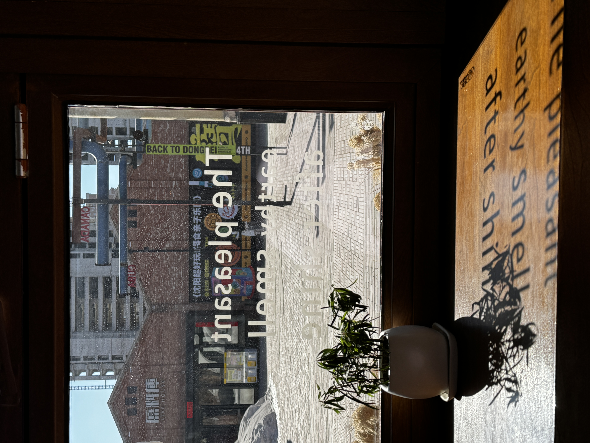
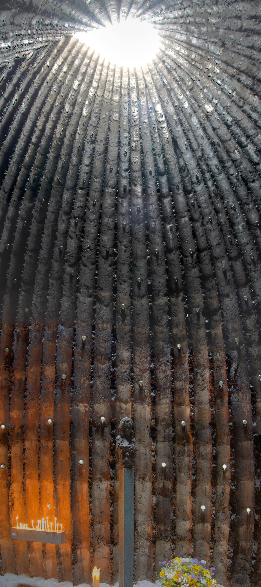
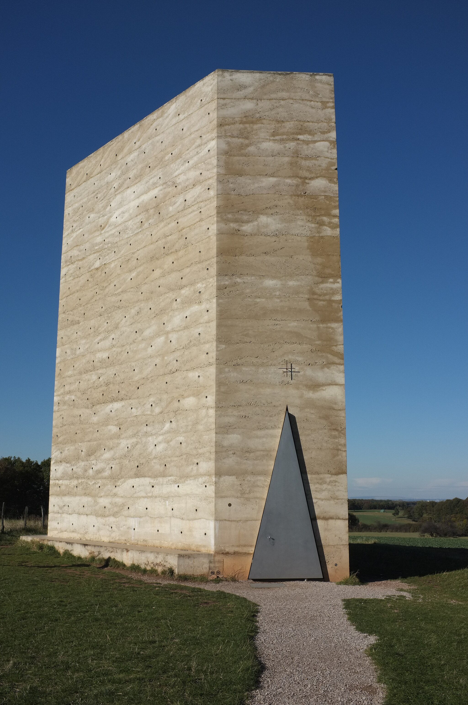

← Journal
Entry 005 — Aesthetics — 2026
Confession Rooms
On Bruder Klaus Field Chapel, a café in Shenyang, and the spaces that make self-confrontation unavoidable

The walk takes twenty minutes. I could cycle, but cycling lets the mind drift in the wrong direction. I prefer to arrive having already begun.
What I am walking toward is not a café. It is a condition.
The place has requirements. Noise — the kind that falls vertically, like water from a height, loud enough to drown the conversation I am already having with myself. A corner, because crowds are not waterfalls. Crowds judge. A window, because there is a question I need the sky for.
Finding all three at once is rare. In every city I have passed through, the right café appears maybe once.
My own is twenty minutes from home on foot. I sit in the corner by the window. Dry winter light comes through the glass, and the printed lettering on the pane throws its shadow across the table in reverse. I open my notebook. This is what I call confession — not in any religious sense, but in the older one: the act of saying, to yourself, what you already know but have not yet admitted.
The space that comes closest to the condition I am describing is one I have never visited.
It is called Bruder Klaus Field Chapel.
I have imagined standing inside it. At the centre of the space, light enters from an oculus above and through three hundred and fifty small glass hemispheres set into the charred walls — each one hand-blown, each one bending the light slightly differently. There is nowhere to position yourself that is not illuminated. The grey parts of yourself — the ones you do not usually allow into full light — have nowhere to go. They surface. They are seen. Then, maybe, they dissolve.

Interior: 350 hand-blown glass hemispheres, charred spruce, open oculus. Mechernich, Germany.
The chapel was designed by Peter Zumthor and completed in 2007 in Mechernich, Germany. It was commissioned not by an institution but by two farmers, Hermann-Josef and Trudel Scheidtweiler, who wanted to honour a medieval Swiss saint on their own land. They built much of it themselves.
The construction method was this: 112 spruce logs from a nearby forest, arranged into a tent-like structure. Concrete poured around them over twenty-four days, one layer at a time. Then a fire, kept burning slowly inside for three weeks, until the wood had shrunk enough to be removed. What remained was the exact shape of the absence — charred walls carrying the memory of every trunk.

Exterior: rammed concrete, steel door. A field in the Eifel hills.
Zumthor has written that he does not begin a project with an image in mind. He begins with the specific conditions — the site, the materials available, the purpose the building must serve — and waits for the form to emerge from those pressures. At Bruder Klaus, the conditions were unusually pure: local timber, a farmer's faith, a field in the Eifel hills. Nothing was imported. The building could not have been built anywhere else, by anyone else, for any other reason.
That specificity is what makes it irreplaceable.
Bruder Klaus was built for confession — not the performance of it, but the private kind. The kind where you stand inside something that knows you, because it was made from the same ground you came from.
I wonder if the people who walk there from the village feel that. Whether the smell of charred wood, familiar from the first visit, does something that no designed atmosphere can replicate. Whether a space can be so specific to its people that entering it is indistinguishable from entering yourself.
In the café, sunlight maps my hand's shadow across the open page. I pick up the pen.